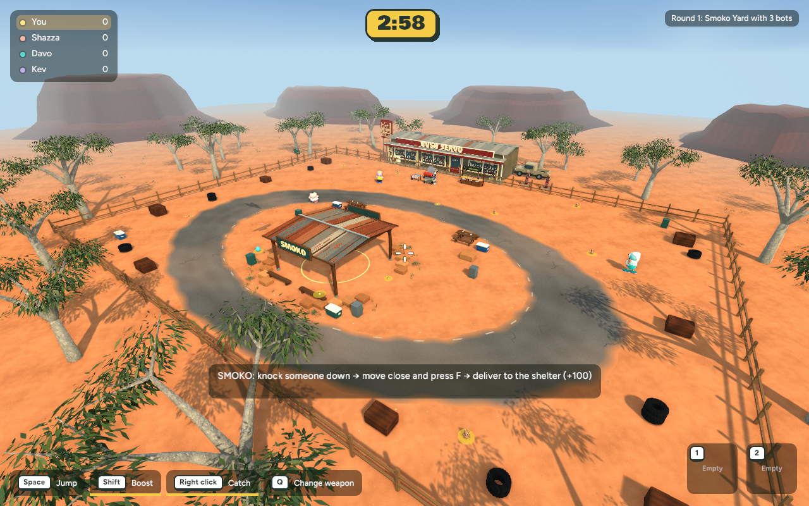

Bush Servo outer ground cover
Actual native Smoko captures from the same overview camera. The new pass adds sparse spinifex fans and clustered ochre stones around the outside of the yard fence. Look along the fence line and tree belt; the play yard and road remain clear.

Before: foliage and frontage detail pass
 After: added spinifex and grouped desert stones
After: added spinifex and grouped desert stones
Review notes: additions are static, beyond the play fence, and do not change shared collision bounds. One overview image was retained; intermittent black captures were excluded. No browser build, performance claim, commit or publication.
Checkpoint, export record and recovery notes